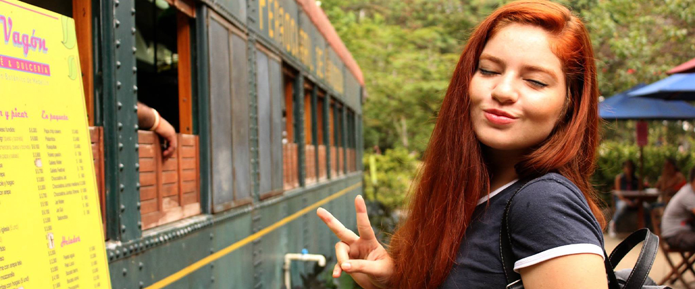
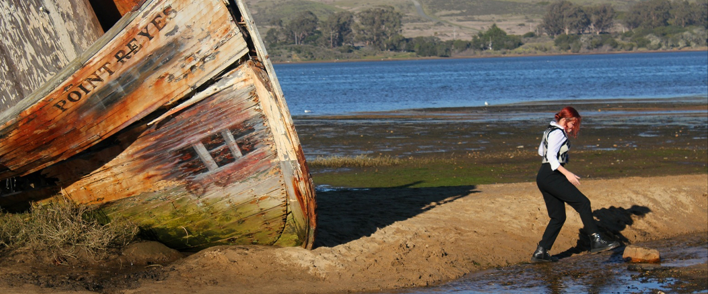
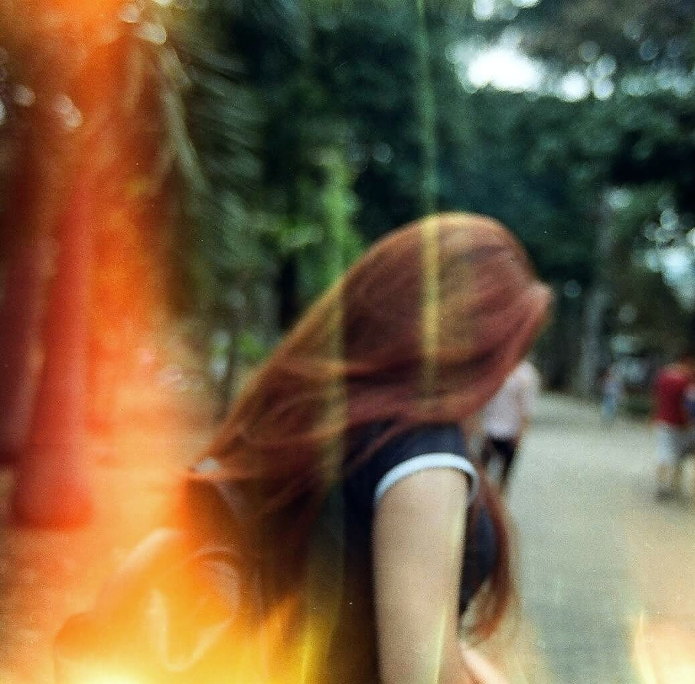

Hello!
I was born in Colombia, in a city called Bucaramanga, but I am not originally from there. I grew up in a town called Villavicencio until I was 20 years old. Then, I moved to Medellín, where I studied Mathematics and Physics, and it was there that I discovered the beautiful world of analog photography. I was given my first analog camera (a Minolta X-370), and although I didn’t know much about photography, I absolutely fell in love with it. In 2020, I moved to California, where I’ve had the opportunity to learn about more cameras and different styles of photography. I’ve explored various places and participated in events (such as sports, weddings, and more).